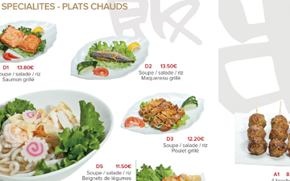
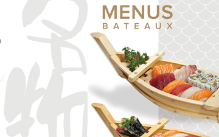

Bienvenue à Akoya, votre plateau de Noël est arrivé!
Offert avec une bouteille de Saké OZEKI 375ml, son contenu est riche avec 8 futo maki foie gras, 6 maki crunchy, 6 maki oeufs de poission, 8 pièces de sushi (dont un Temaki) et 8 maki sandwich (goût avocat épicé et tarama aux oeufx). Vous pouvez même le composer vous-même.
Bienvenue à Akoya
Venez retrouver votre restaurant de sushi au centre de Melun à l'île Saint-Etienne et découvrir plein de surprises à table.
Sashimis et makis à la carte
Ils sont faits avec les produits frais devant vous.
Nos formules
Voici les formules de nos spécialités et nos brochettes.

Nos formules
Retrouvez l'assortiment qui vous plaît parmi nos formules mixes.
Nos formules
Peut-être un formule chirashi dans son bol de riz vinaigré ?
Nos formules
Ou bien vous êtes un fan des poissons crus.
Nos formules
Pour bien savourer ou partager, un bâteau est un bon choix.

Boissons et vins
Tout pour mieux accompagner vos plats.
{kind=link}
{kind=link}
{kind=link}
{kind=link}
{kind=link}
{kind=link}
{kind=link}
{kind=link}
{kind=link}